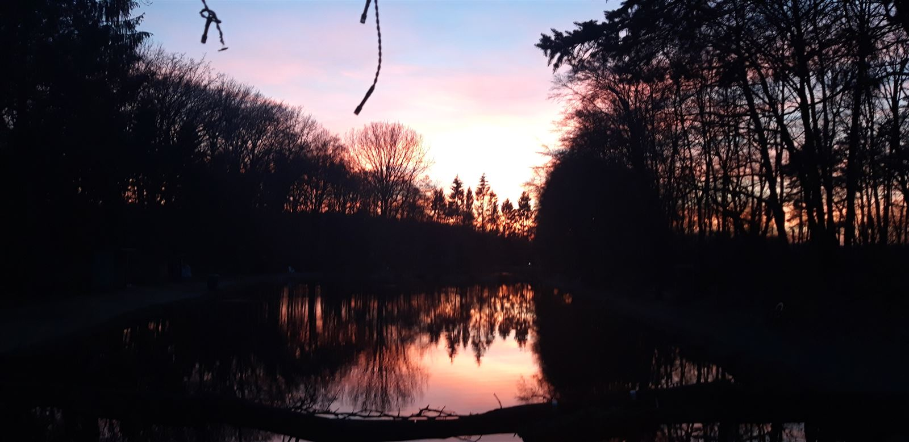

Angeln mitten im Münsterland
Forellen- und Lachsforellenteich, Mietteiche für Gruppen und Fisch aus eigener Räucherei. Ohne Anmeldung, einfach vorbeikommen.
Alles rund um die Forelle
Ob ein ganzer Tag am Wasser, ein eigener Teich für Freunde und Verein oder frischer Fisch für den Grill: Bei uns finden Sie alles an einem Ort.

Angeln an Teich 1 & 2
Tageskarten für Forellen und kapitale Lachsforellen. Ganzer oder halber Tag, 2 Ruten pro Person.
Preise ansehen
Teich mieten
Ein eigener Teich für Familie, Freunde, Verein oder Firmenfeier, mit Besatz nach Wunsch.
Mietteiche
Hofladen
Frisch ausgenommene Forellen, Lachsforellen und Aal, auf Vorbestellung morgens für Sie fertig.
Zum Hofladen
Räucherfisch & Platten
Forellen, Lachsforellen und Aale aus eigener Räucherei, auch als Fischplatte für Ihr Fest.
Mehr erfahrenNeuigkeiten vom Hof
Besatztage, Vermietungen und wichtige Hinweise. Noch aktueller geht es auf Facebook.
Vielfalt an fünf Teichen
Angefangen hat alles in einer alten Fischzuchtanlage in Börnste. Heute pflegen wir als Familie unsere Teiche mit viel Leidenschaft fürs Angeln und sorgen regelmäßig für frischen Besatz.

Gruppe, Verein oder Firmenfeier?
Wir reservieren Ihnen jederzeit einen eigenen Teich. Schreiben Sie uns einfach Ihren Wunschtermin, am schnellsten per WhatsApp.